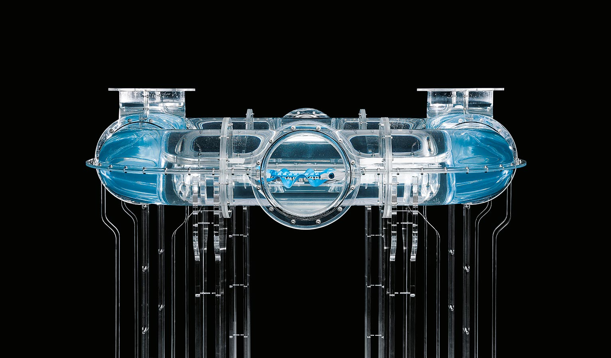

BionicFinWave
Unterwasserroboter mit einzigartigem Flossenantrieb
Meeresstrudelwurm, Sepia und Großnilhecht haben eines gemeinsam: Um sich fortzubewegen, erzeugen sie mit ihren Längsflossen eine durchgängige Welle, die sich entlang ihrer gesamten Länge voranschiebt. Mit dieser so genannten undulierenden Flossenbewegung manövriert sich auch der BionicFinWave durch ein Rohrsystem aus Acrylglas. Dabei kann der autonome Unterwasserroboter über Funk mit der Außenwelt kommunizieren und Daten – wie die erfassten Sensorwerte für Temperatur und Druck – an ein Tablet übertragen.

Die Längsflossen der natürlichen Vorbilder verlaufen von Kopf bis Schwanz und befinden sich entweder am Rücken, am Bauch oder an beiden Seiten des Körpers. Mit der wellenförmigen Bewegung der Flossen schieben die Fische das Wasser nach hinten, wodurch ein Vorwärtsschub entsteht. Umgekehrt können die Tiere so auch rückwärts schwimmen und je nach Wellenmuster für Auftrieb, Abtrieb oder gar Seitenschub sorgen.
Flexible Silikonflossen für naturgetreue Schwimmmanöver
Der BionicFinWave nutzt zur Fortbewegung seine beiden Seitenflossen. Sie sind komplett aus Silikon gegossen und kommen ohne Verstrebungen oder andere Stützelemente aus. Dadurch sind sie äußerst nachgiebig und können so die flüssigen Wellenbewegungen der biologischen Vorbilder naturgetreu umsetzen.
Dazu sind die beiden Flossen links und rechts jeweils an neun kleinen Hebelarmen befestigt. Diese wiederum werden von zwei Servomotoren angetrieben, die im Körper des Unterwasserroboters sitzen. Zwei anliegende Kurbelwellen übertragen die Kraft auf die Hebel, sodass sich die beiden Flossen individuell bewegen lassen. So können sie unterschiedliche Wellenmuster generieren, die sich besonders für eine langsame und präzise Fortbewegung eignen und Wasser weniger aufwirbeln als beispielsweise ein konventioneller Schraubenantrieb.

Um eine Kurven zu schwimmen, bewegt sich beispielsweise die äußere Flosse schneller als die innere – vergleichbar mit den Ketten eines Baggers. Ein dritter Servomotor am Kopf des BionicFinWave steuert die Biegung des Körpers, mit deren Hilfe er nach oben und unten schwimmen kann. Damit die Kurbelwellen entsprechend flexibel und biegsam sind, sitzt zwischen jedem Hebelsegment ein Kardangelenk. Dazu wurden die Kurbelwellen inklusive der Gelenke und des Pleuels aus Kunststoff in einem Stück im 3D-Druck-Verfahren gefertigt.

Intelligentes Zusammenspiel verschiedenster Komponenten
Auch die restlichen Körperelemente des BionicFinWave sind im 3D-Verfahren gedruckt. Mit ihren Hohlräumen fungieren sie als Auftriebskörper. Gleichzeitig ist hier auf engstem Raum die gesamte Steuerungs- und Regelungstechnik wasserdicht und sicher verbaut und aufeinander abgestimmt. So sitzen im Vorderteil des Körpers neben der Platine mit Prozessor und Funkmodul auch ein Drucksensor sowie Ultraschallsensoren. Sie messen permanent die Abstände zu den Wänden sowie die Tiefenposition im Wasser und vermeiden so Kollisionen mit dem Rohrsystem.